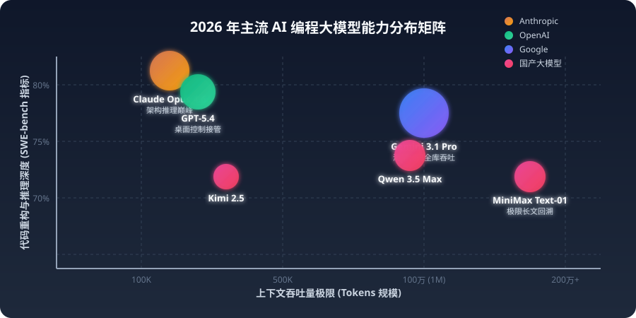
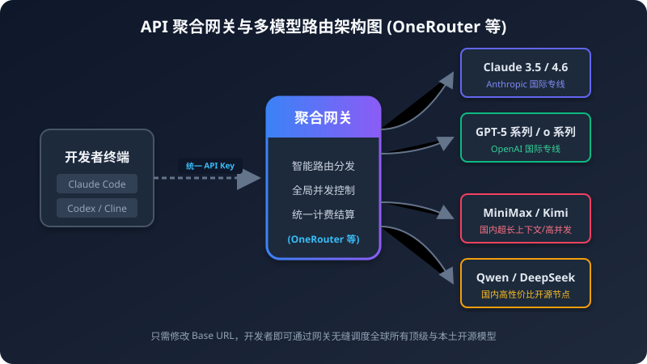

Part 1.5演进图谱
多 Agent 协作架构
从强交互工具到完全放权 — 顶层 Orchestrator 降解需求，子 Agent 并发执行

🧩 MULTI-AGENT PIPELINE
🧠
Orchestrator任务拆解
⚡ Agent A
检索上下文
🔨 Agent B
执行变更
✅
HumanReview & Merge
- Step 1-2：行级 AI 建议，人类 Y/N 授权
- Step 3-4：AI 自主修复报错，人类复查
- Step 7-8：多 Agent 并发，终极自举
Part 2.1极客核心
国际最强数字代理 CLI
摆脱图形界面干扰，接管 CI/CD 底层的纯终端神器
Claude Code

原厂打造，多文件跨库重构，YOLO 无人值守全仓改写。
Gemini CLI

百万 Token 壁垒级窗口，直接吞噬巨型项目文档库。
Codex CLI

极度透明开源，支持无缝切换 OpenAI 兼容协议 / Qwen。
OpenCode

优雅 TUI 交互，实时多模型横向代码比对测试。
Part 2.2
顶级协作前哨：AI Native IDE
基于 VS Code 内核极致魔改及全新颠覆级工具台
⚡
Cursor
$20/月

全球综合第一 · Tab 补全最丝滑 · Composer 多文件编排
🌊
Windsurf
$15/月

首创 Cascade Agent · 重构上下文极稳定不断层
🤖
Antigravity
DeepMind

Agent-First 原生架构 · 多任务沙盒并发 · 代码自动审查
💻
VS Code + Copilot
Microsoft


企业安全合规首选 · 开放插件生态第一 · Codex App 原厂体验
Part 2.3
国内生态：合规优先与深度集成
云厂商绑定优势，出境网络熔断下的主力生产力工具。

Trae（字节跳动）
完全免费接入 Claude 4 Sonnet，适合快速开启 Web Builder 全栈起手项目。

QCoder（阿里）
霸道 Repo Wiki 独门心法，擅长给陈旧大型史诗级 Java 仓库编写解构图谱。

CodeBuddy（腾讯）
云端基建绑定王者，直达图生代码及云函数免密自动发布闭环。
◈ AI 编程工具选型决策树
普选痛点是什么？
▼ 预算+网络受限
Trae（字节）
免费直连 Claude
QCoder
Java 大仓首选
▼ 预算充足
Cursor Pro
综合体验第一
Windsurf
长流程稳定
▼ 完全定制掌控
Claude Code CLI
YOLO 无人值守
Antigravity
并发沙盒
Part 3.1SWE-Bench
选型标尺：头部基座实战能力

SWE-bench Verified 衡量 AI 在真实 GitHub Issue 修复上的成功率。分数越高 = 越适合大仓自主重构。
| 主流序列 | SWE-bench | 上下文 |
|---|---|---|
| Claude Opus 4.6 | 84.2% | 200K |
| GPT-5.4 | 82.5% | 272K |
| GPT-5.3 Codex | 81.5%+ | 400K |
| Gemini 3.1 Pro | 80.6% | 1-2 Million |

Part 3.4
多租户与全局路由（OneRouter）
越过地域封锁障碍，利用网关转发兼容国际通用请求规范。
🔀 API ROUTING ENGINE (Animated)
🖥️
CLI ClientAnthropicAPI
⚡
OneRouterBase URL 改写
🇨🇳 MiniMax
🇨🇳 百炼 Qwen
>"偷梁换柱"：修改
base_url → 请求按延时+价格自动路由至国内端点

Part 3.5
国内大厂 Coding Plan
直接采购专为开发者定制的模型调用套餐，是平替的最优解。

阿里云百炼 Qwen → bailian.aliyun.com
月度总量制，极高性价比。完美对齐 OpenAI 兼容模式。
Qwen3.5-Plus 约 ¥0.21/M tokens

MiniMax M2.5 → platform.minimax.io
极速推理，400万 tokens 超长上下文，原生伪装 Claude 接点。
约 ¥0.8/M tokens（输入）

腾讯云混元 → cloud.tencent.com
团队在腾讯云基建内，一键 AI 生成到 FaaS 部署。
混元-T1 约 ¥0.12/M tokens
| 方案 | 入口 | 协议兼容 | 最适场景 |
|---|---|---|---|
| 阿里云百炼 | bailian.aliyun.com | ✅ OpenAI | Codex CLI 平替，国内稳定 |
| MiniMax | platform.minimax.io | ✅ Anthropic | Claude Code 免翻墙直连 |
| 腾讯混元 | cloud.tencent.com | ✅ OpenAI | 腾讯云基建团队首选 |